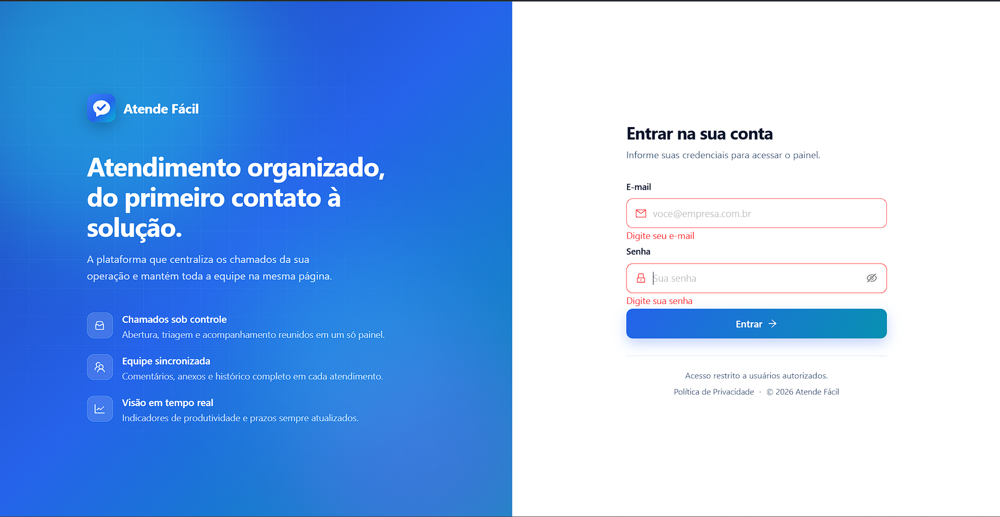
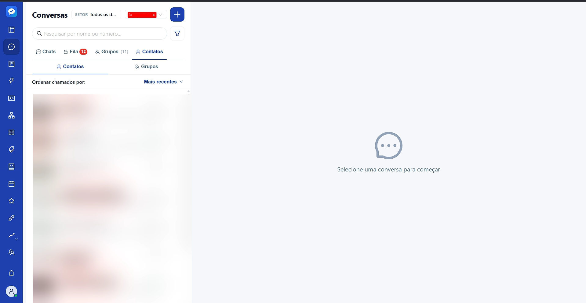
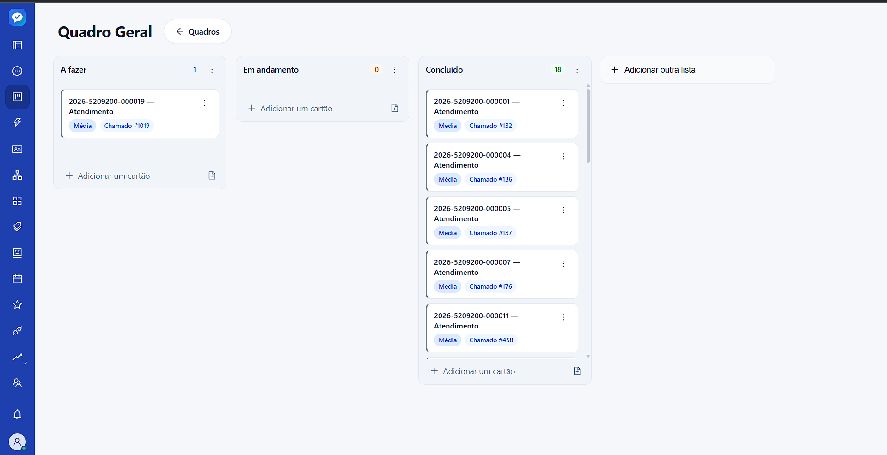
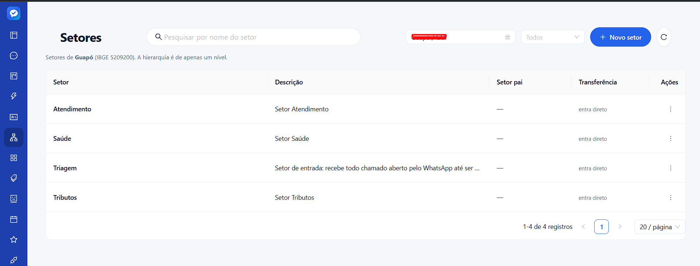
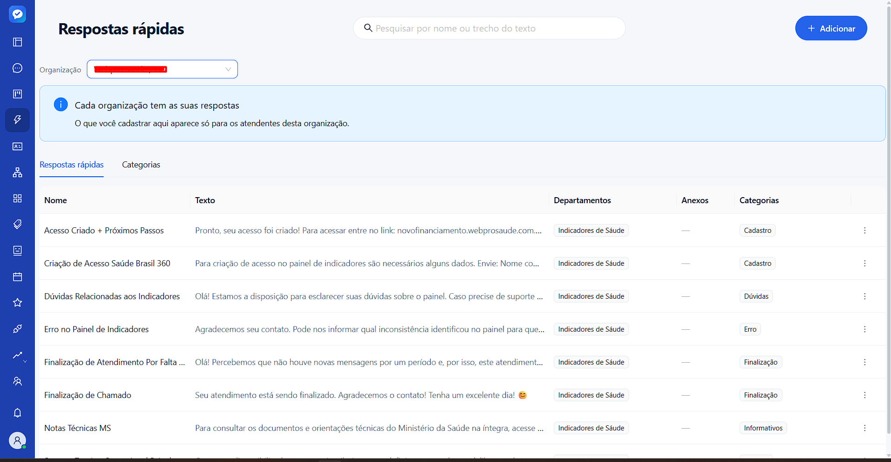

The problem
A citizen messages the city hall's WhatsApp and the request dies inside the conversation — no protocol, no deadline, no owner. On the other side, the agent juggles one phone per number and management has no way to know what is still open — or to prove what was handled.
What was built
- Several WhatsApp numbers in one panel, through an unofficial provider, the official Meta API or Telegram, behind the same channel abstraction
- Tickets with a public sequential protocol, deadline, transfer between departments and a history that cannot be rewritten
- A bot built on screen — a visual flow editor that answers, routes or collects data before a human takes over
- Public portal with no login: the citizen opens the request, attaches a photo and tracks it by protocol
- Kanban synchronised with ticket status for the internal team
- Multi-organisation from the ground up, sold directly or through resellers managing their own portfolio
Modules
Twenty-five modules, from the WhatsApp webhook to the personal-data access report.
Service desk
- Real-time conversations (SSE)
- Internal notes never sent to the citizen
- Scheduled messages
- Quick replies with attachments
- Contacts and abuse blocking
- Satisfaction survey (NPS/CSAT)
Tickets
- Sequential protocol per organisation
- Triage, assignment and transfer
- SLA pause while awaiting reply
- Reopening linked to the original
- Departments and categories
- Public citizen portal
Automation
- Flow engine with visual editor
- Immutable graph versioning
- Inactivity timers
- Legacy text menu
- Holiday calendar per organisation
- Meta message templates
Platform
- WhatsApp, Meta Cloud API and Telegram channels
- Kanban boards
- Resellers and white-label
- Contracted modules per customer
- Municipal debt-lookup integration
- Audit trail and privacy report
- RBAC with 7 roles
Architecture
- Monorepo with independent API and panel, plus deploy orchestration in Python over SSH and Docker
- Backend organised by domain, not by technical layer — the ticket state machine imports neither Prisma nor Express
- Tenant isolation at the database level: a Prisma Client extension intercepts every query to force the tenant filter
- Invariants Prisma cannot express are enforced by partial unique indexes hand-written in the migration SQL
- Ticket and card history is append-only, guaranteed by a database trigger
- Provider webhooks authenticated by a per-channel secret (HMAC), not by JWT
- Channel and integration credentials encrypted with AES-256-CBC, never returned in an API response
- CI runs against a real Postgres, validates the schema and blocks drift between migration and model — deploy is never automatic on merge
Integrations
External systems the product talks to.
- WhatsApp (Z-API)
- WhatsApp Cloud API (Meta)
- Telegram
- CENTI
- MinIO
- OpenTelemetry
- Axiom
- Cloudflare Tunnel
Technical challenges
A bot that must not hang up on someone still typing
The flow engine is a state machine persisted in the database, with an execution turn, a per-turn hop budget (to contain a looping graph published by mistake) and timers fired by cron. The hard part is the inactivity timer: at fire time it revalidates its own reason to exist, comparing the conversation's last activity against the mark saved when it was scheduled. The session is never closed while the person is still writing, even if the explicit timer cancellation failed — revalidation is the primary safety net, not the fallback. A partial unique index prevents two live executions of the same bot for the same citizen, and a daily routine unsticks the ones that froze.
HTTP 200 does not mean delivered
The unofficial WhatsApp provider can answer 200 with a message id and never deliver anything — which is exactly what happened in a real incident: ten messages recorded as sent that reached nobody. The rule became no proof of delivery, the state is FAILED: an empty external id counts as failure even with no exception thrown. The ambiguity between phone number and internal identifier is resolved in cascade — the cheap path first, the expensive one only as fallback, cached per channel.
The same person in two conversations
WhatsApp identifies the same contact sometimes by phone number, sometimes by an internal identifier. Treating them as separate threads produced the symptom reported as a conversation split in half. The fix combines two unique indexes per channel — phone and internal id — with a per-organisation message idempotency key, so the same provider event is never processed twice when it arrives by different routes.
Isolation that does not rely on discipline
On a platform where each municipality is a tenant, one forgotten where leaks one city hall's data into another's. The guard is a Prisma extension that injects the filter into every query, plus a test suite that actively tries to break that guard — which is how the select omitting the tenant field (leaving the later check comparing against undefined) and the nested include read that escaped the extension were both found.
Screens
Screenshots of the system in use.




